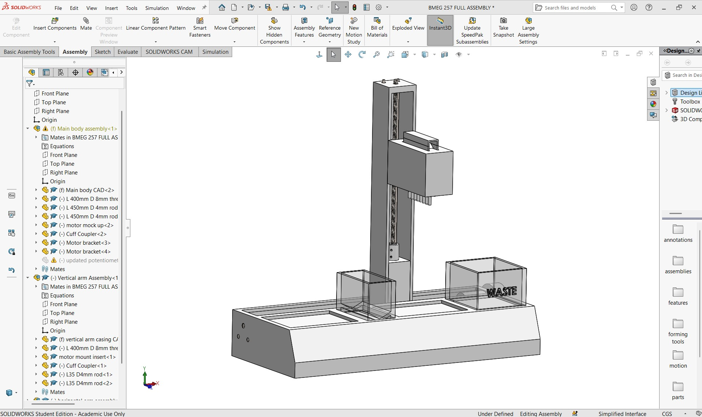
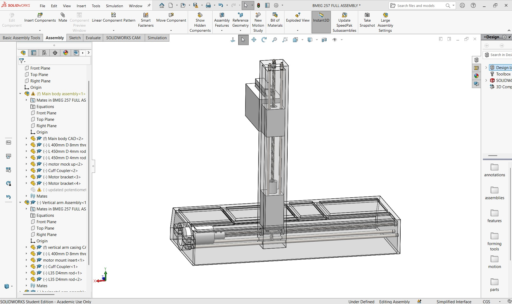
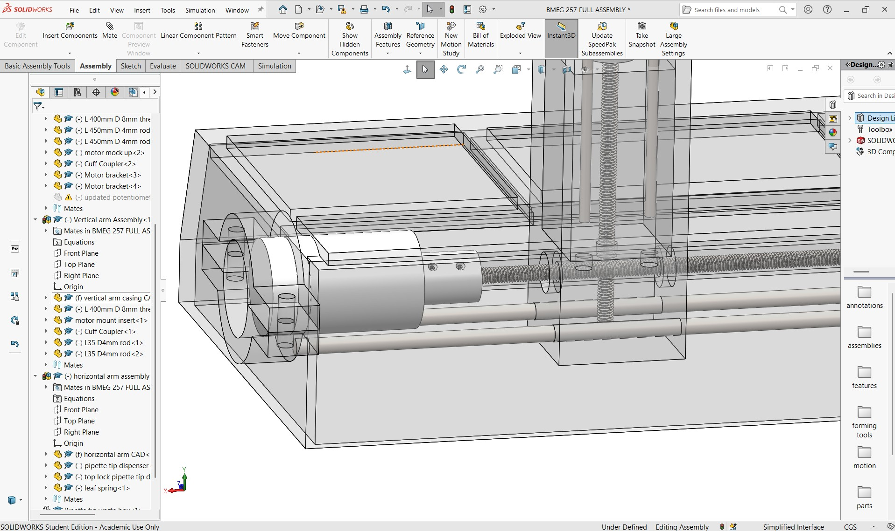

Automated High Throughput Pipetting Machine
Mechanical Design & Testing

Overview
This project involved the design and development of an automated high-throughput multichannel pipetting machine intended to improve the efficiency of laboratory pipetting for drug discovery applications. Working as part of a multidisciplinary engineering team for a project class, I contributed to the complete product development cycle, transforming an initial concept into a fully functional prototype. The system was designed to accurately dispense liquid volumes between 10–100 µL while providing controlled motion across a standard 96-well plate using a lead screw driven positioning system. I was heavily involved in the mechanical design, CAD modeling, manufacturing, and assembly of the device. Using CAD software, I designed structural components, mounting brackets, and the linear motion system while ensuring manufacturability and ease of assembly. After finalizing the designs, I fabricated and assembled the prototype using a combination of 3D-printed and off-the-shelf components, integrating lead screws, motors, bearings, and custom brackets into a fully operational system. Throughout the build process, I iterated on the design to improve alignment, rigidity, and overall performance. Following fabrication, I participated in functional testing and validation to evaluate the prototype's mechanical performance and verify that it met the project's design requirements. This included assessing motion accuracy, repeatability, and overall system functionality while identifying opportunities for refinement. By taking the project from CAD design through manufacturing, assembly, and testing, I gained hands-on experience in product development, rapid prototyping, design iteration, and translating engineering concepts into a working mechanical system.
Key Deliverables
- Designed and modeled a fully functional automated multichannel pipetting machine in CAD, including the frame, linear motion system, motor mounts, and custom structural components.
- Manufactured and assembled the prototype using 3D-printed and off-the-shelf components, integrating lead screws, DC motors, bearings, and mechanical hardware into a working system.
- Developed and validated a precision X-Y positioning mechanism capable of accurately moving the pipetting head across a 96-well plate to satisfy project performance requirements.
Role
Mechanical Engineering
Tools
SolidWorks, Arduino
Technical Documentation & Gallery


